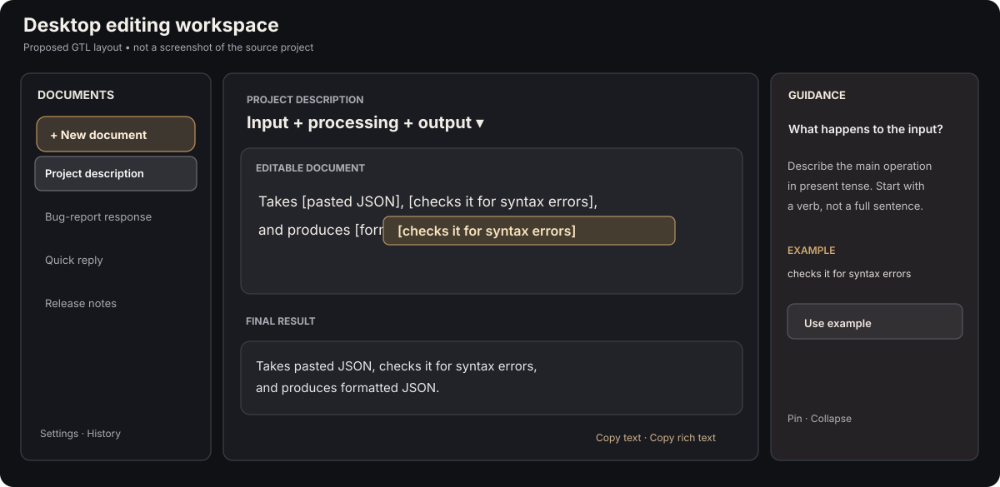
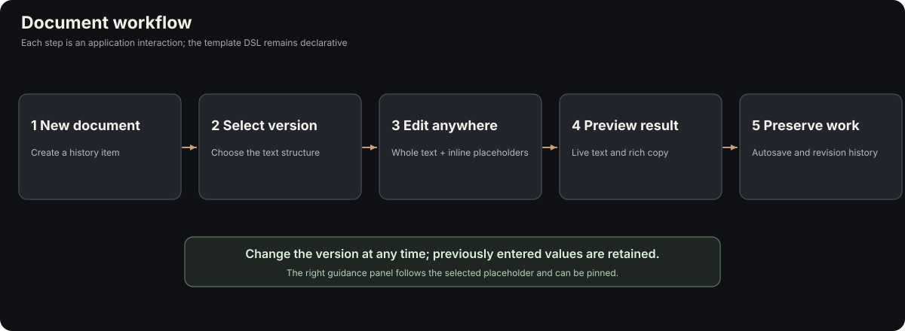
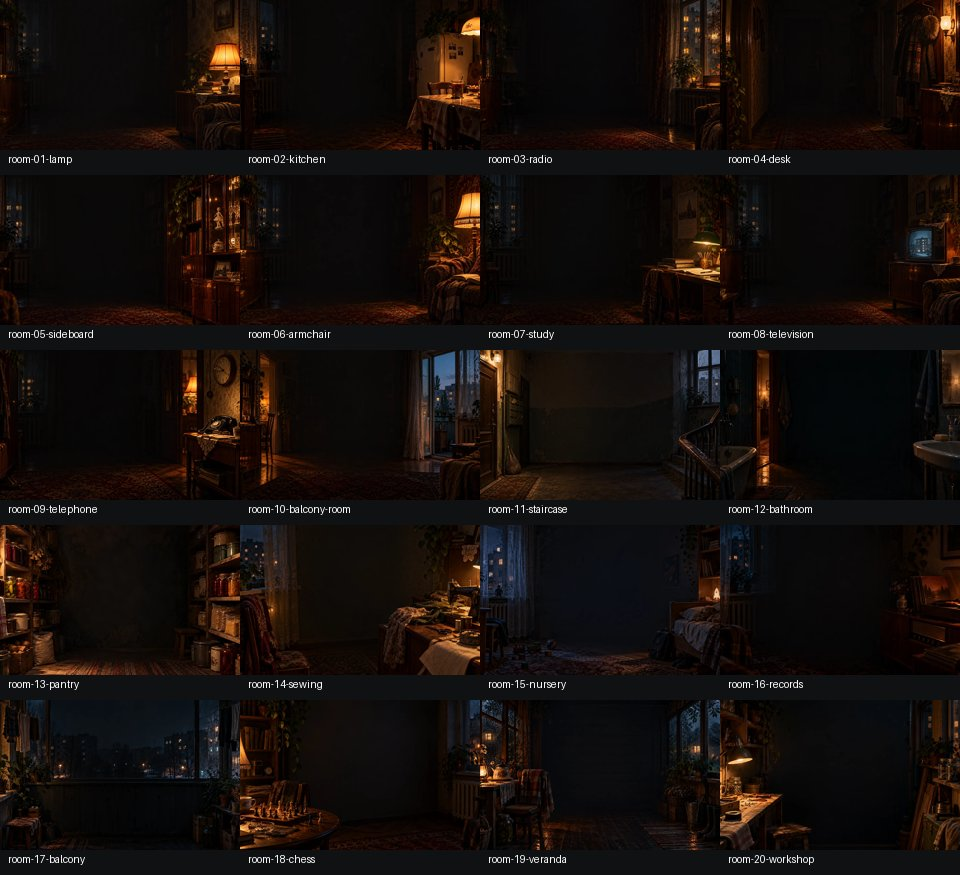
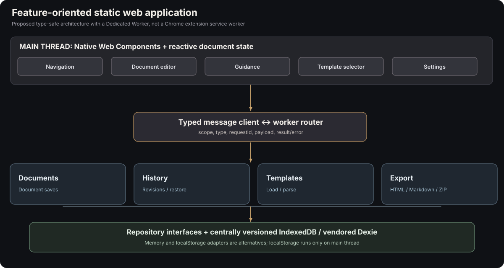
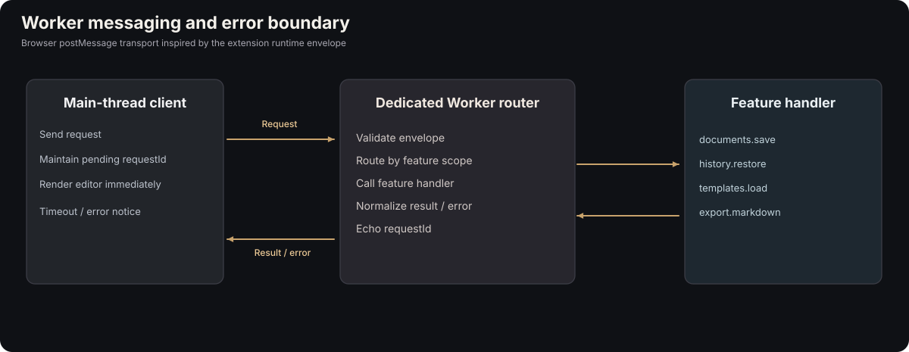
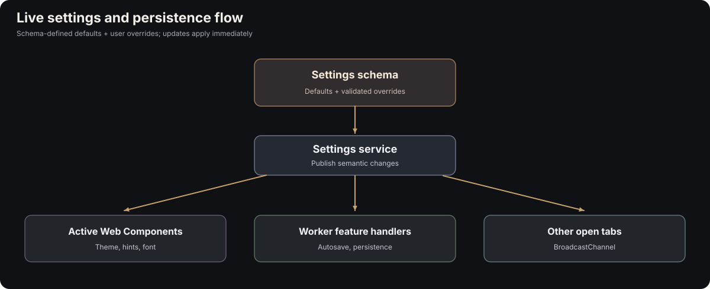
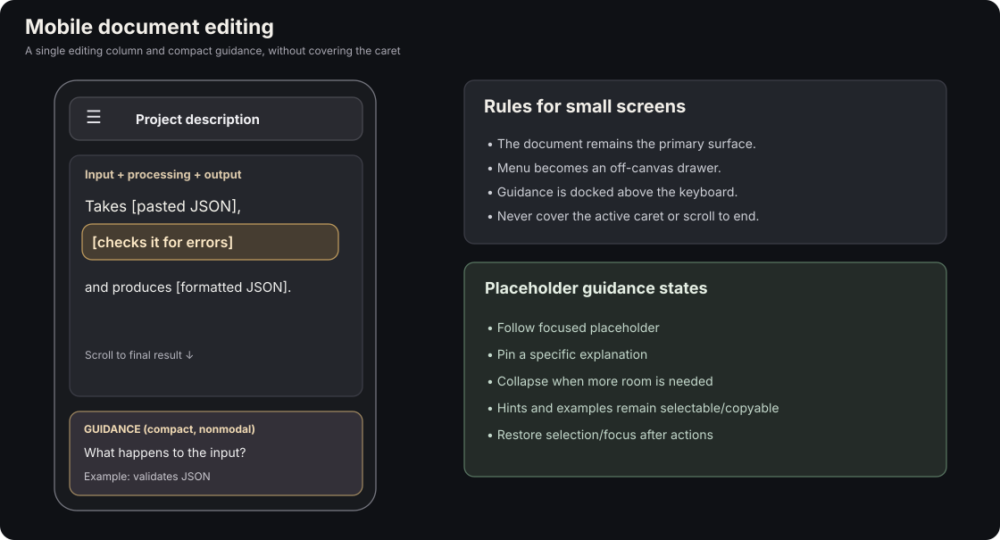

Guided Document Editor — UI and Engineering Reference Kit
Reference pack v0.1 | assembled October 25, 2026
This is a reference and design handoff, not a working application or a finalized implementation specification. It combines two successive reviews from this conversation:
- An analysis of
sovet-rdtl-0.13.1-source(1).zipas inspiration for a dark, document-centered, chat-history-style interface. - An analysis of
browser-extension-src.zipas inspiration for TypeScript, Bun, vendored JavaScript, Dexie/IndexedDB, typed messaging, live settings, Shadow DOM components, and feature-oriented worker dispatch.
It also records the reset in product direction: the document is the interface. Templates describe text, placeholders, hints, examples, and alternate versions. The UI supplies interactivity; we do not recreate a procedural questionnaire DSL.
Start here
- Documentation index
- Combined reference guide — one continuous handoff linking both reviews
- UI/UX source review — detailed visual, interaction, and state insights
- Extension architecture source review — exact source paths and recommended adaptations
- Product and architectural brief — shared design direction, explicit exclusions, open questions
- Source file map — exact extracted paths, why each file matters, and copy/adapt guidance
- Asset inventory — copied backgrounds, vendored runtimes, provenance and notices
- Implementation experiments — sequence of proofs before committing to architecture
- PowerShell wizard origin — the five description styles and recovery motivation
- Visual reference — open as a local file; readable reports with inline SVG diagrams
Directory map
README.md
index.html Static dark documentation viewer; not the application
docs/ Full design discussions and synthesis
diagrams/ Editable SVG architecture and interaction diagrams
assets/ UI background references and contact sheet
examples/ Minimal sample templates and JSON manifest
library/ Vendored JS distributions copied from the extension
reference/
sovet-rdtl/ Selected original UI code, CSS, MIT LICENSE, and specs
browser-extension-src/ Selected original settings/worker/UI/types source files
powershell/ Earlier Add-Project.ps1 script as optional inspiration
manifest/ Machine-readable provenance and SHA-256 hashes
Important source and architecture distinctions
sovet-rdtluses Custom Elements with light DOM, not Shadow DOM. Its eventing, sidebar, reader layout, modal source panel, and background image loader are reusable patterns; the editor is new work.browser-extension-srcis a Chrome Manifest V3 extension. Its background worker is an extension service worker and uses Chrome APIs. A static website cannot copy those APIs unchanged. Proposed site architecture uses a Dedicated Worker for processing/IndexedDB, with a separate optional service worker for offline caching.- The extension's
Dexie 4.2.0file is UMD, designed to exposeglobalThis.Dexie. It is included unmodified, but loading it inside a Bun-built module worker must be tested. It is not an ESM module by itself. - The supplied extension archive does not contain a project-wide root LICENSE. Referenced first-party extension code is copied from the user's archive for implementation study. Review redistribution rights before publishing a derivative package.
- UI backgrounds included here are reference assets, not approved final product graphics. The chat project's LICENSE describes its code as MIT-licensed and separately flags corpus/third-party materials.
- Build/runtime code is not bundled into a working app here. Bun, TypeScript, and web-component integration decisions are recommendations until exercised in prototypes.
Recommended baseline
TypeScript (pin an explicitly verified stable version when implementing), Bun for development/bundling, no npm runtime dependencies, explicitly checked-in vendored runtime distributions, browser-native Web Components, Dexie/IndexedDB behind a storage adapter, a feature-scoped worker router, and a deliberately small document-template format.
Provenance
- Input:
sovet-rdtl-0.13.1-source(1).zip→reference/sovet-rdtl/sovet-rdtl/.... - Input:
browser-extension-src.zip→reference/browser-extension-src/src/.... - Vendored libs:
browser-extension-src.zip→library/...(exact bytes). - Background contact sheet: supplied in the prior conversation, copied to
assets/background_contact_sheet.jpg. - The diagrams in
diagrams/were redrawn for this kit from the ideas and diagrams in the prior reviews; they are not screenshots or source assets.
See manifest/sha256sum.txt and manifest/provenance.json for verification.
Combined reference — GTL document editor, UX + implementation patterns
This combined briefing joins two earlier source reviews. The complete, separately readable analyses are Report 1: UI/UX and Report 2: extension architecture. Their diagrams have been redrawn as editable SVGs and their cited source files copied into ../reference/ with original paths preserved.
Not a finished application specification. Observations about the archives are labeled separately from recommendations for the new application. Decisions not yet accepted should remain reviewable.
Purpose and product model
The new product is a guided text-document editor, not a chat client, spreadsheet, or step-by-step questionnaire wizard. Every historical entry resembles a chat item visually, but represents one persistent document. The selected document is immediately editable. Its whole text is visible, with named inline placeholders and context-sensitive hints. A rendered, copyable result appears lower in the same document. A user can fill placeholders in any order, edit ordinary text, switch template versions, preserve previous answers, revisit earlier documents, and use revision history to recover past edits.
The template DSL should stay minimal. The latest working design sketch is:
TEMPLATE: Input + processing + output
TEXT:
Takes {{$input}}, {{$processing}}, and produces {{$result}}.
$input: What does the user provide?
HINT: Describe the original data or information.
EXAMPLE: pasted JSON
$processing: What happens to the input?
HINT: Describe the main operation.
EXAMPLE: checks it for syntax errors
$result: What does the application produce?
HINT: Describe the final output.
EXAMPLE: a readable formatted version
Optional VERSION blocks would choose between a handful of static alternative text structures. Do not import the old imperative GTL design's COMPOSE, WHEN, FOR EACH, FRAGMENT, policy options, or catalog registry without a concrete new requirement. The previous specification grew too complicated, and the user deliberately restarted from a document-centric model.
Joined diagram: user experience

A dark desktop shell holds: (1) a vertical document history and New Document command, (2) a generous central editing column, and (3) a nonmodal contextual guidance dock. The right panel tracks the focused placeholder, can be pinned, and lets the user copy example text without hiding the document. On narrow screens, navigation becomes a drawer and guidance becomes a compact panel that does not obscure the caret.

The user selects a template/style inside a new document; its complete text appears immediately. The application handles field focus, live result, retained values across version switches, undo/redo, autosave, revision history, and copy/export. These are app services, not DSL instructions.
What the chat-source project contributes
Source: sovet-rdtl-0.13.1-source(1).zip.
sovet-rdtl/styles.css: restrained black palette, 256px sidebar, readable center column, responsive drawer, focus/accessibility conventions.sovet-rdtl/src/ui/components/sov-sidebar.js: vertical history, current selection, create/select/delete events.sovet-rdtl/src/ui/components/sov-app.js: app shell and UI coordination.sovet-rdtl/src/ui/components/sov-message.js: prominent readable message treatment and contextual info affordance.sovet-rdtl/src/ui/components/sov-origin-panel.js: async contextual information, stale-request protection, focus return; adapt into nonmodal pinned guidance.sovet-rdtl/src/ui/components/sov-backdrop.js: responsive decorative WebP backgrounds, small image cache, failure handling.sovet-rdtl/src/ui/dom.js: light utility code, SVG icons,CustomEventwith bubbling/composed.sovet-rdtl/src/adapters/local-storage.jsandsrc/app/chat-service.js: state isolation, storage errors, concurrency safeguards.
The chat application uses Custom Elements with light DOM, not Shadow DOM. The document editor is new implementation work; no existing source component can simply be renamed into a robust rich-text editor.

What the extension-source project contributes
Source: browser-extension-src.zip.
src/content/libs/dexie-4.2.0.js: vendored Dexie UMD distribution included in this package underlibrary/.src/background/tab_trail_service.ts: repository/store abstraction with Dexie and memory implementations.src/content/runtime_messaging.ts: typed message envelopes, request correlation, structured failures.src/settings/settings_runtime.tsandsrc/settings/settings.ts: schema-driven settings, defaults/overrides, reset behavior, dynamic controls.src/background/service_worker.ts: example of worker routing and DB ownership, also an example of a monolith to avoid.src/vendor/retroos-ui-v001/src/components/field.tsandsrc/core/styles.ts: real TypeScript Shadow DOM component patterns and style adoption.src/vendor/retroos-ui-v001/tsconfig.json,scripts/build.mts: TypeScript/Bun strict-build conventions.src/content/atools/session-snapshot-v001/js/session_snapshot_zip.tsand Markdown conversion utilities: export pipeline references.

The source is a Chrome extension. For the static website, replace extension messaging with browser Worker postMessage, favor a Dedicated Worker for Dexie/processing, and reserve an optional website service worker for offline assets. Use feature folders to own coherent domain capabilities rather than putting all logic into one worker file. Keep the main-thread editor reactive without per-keystroke worker RPC.

Proposed system boundaries
| Subsystem | Responsibility | Execution |
|---|---|---|
| Document editor | Caret, selections, inline placeholder UI, undo/redo, immediate updates | Main thread |
| Document state/model | Semantic text/placeholder nodes, current values, active version | Main thread; serializable |
| Guidance | Questions, examples, pin/focus behavior | Main thread |
| Templates | Static file loading, minimal DSL parse, cached definitions | Worker or main thread depending on cost |
| Documents feature | Create/list/load/save/delete | UI + feature worker handler |
| History feature | Recoverable revision snapshots, restore | UI + feature worker handler |
| Settings feature | Schema/defaults, live updates, persistence choice | Main thread; worker notification |
| Export feature | Plain/rich HTML/Markdown/ZIP | Main + optional worker |
| Data platform | Repository interfaces, IndexedDB/Dexie initializer | Worker; optional main-thread adapters |
| Navigation | Vertical document history, New Document | Main thread |
A feature may contain ui/, worker/, and storage/, but only when needed. Keep schema migrations centrally coordinated, with feature repositories owning their operations.

Deployment and libraries
Build with Bun; use modern TypeScript with strict checks; keep npm runtime dependencies out of the deployed app. Vendor required runtime JS explicitly, retaining license notices. Copy static HTML, compiled bundles, selected assets, .gtl template files, and a generated manifest into dist/. Host as ordinary files on static hosting.
Dexie 4.2.0 is included exactly as supplied; its UMD module-worker loading must be proved. JSZip 3.10.1, markdown-it 14.2.0, and Turndown 7.0.0 are available as optional vendor files for export/conversion. They need not be loaded in the first release.
First prototype / acceptance scenario
A user opens the static site, creates a document, chooses one of the five description patterns, sees the whole sentence at once, selects a placeholder, sees a stable question/hint/example, types an answer, edits surrounding prose, switches versions and back without losing values, scrolls to the final result, copies plain/rich text, leaves the document, and reopens it with edits intact when persistence is enabled.
No chat composer, agent backend, dynamic condition language, extensible runtime plugin system, or large settings panel is needed for this prototype.
Handoff to the next specification
Use this kit as evidence and reference, not as an instruction to implement every possible feature. Specific implementation decisions still require experiments: selection/caret/IME in the editor, Shadow DOM boundary, Dexie in a Bun module worker, atomic document+history saves, concurrency, clipboard fidelity, settings cross-tab changes, and storage migration.
Full detailed reviews: 01 UI/UX and 02 extension architecture.
Original CLI inspiration
The user-supplied revised PowerShell helper is copied to ../reference/powershell/Add-Project.ps1 as a third, optional source. Its guided five-style descriptions, examples, preview-before-accept workflow, and draft-recovery concerns motivated the document editor. See 07-original-wizard-and-recovery.md.
Report 1 — UI/UX source analysis: SovietRDTL as the editor's visual reference
Source archive: sovet-rdtl-0.13.1-source(1).zip
Extracted references: ../reference/sovet-rdtl/sovet-rdtl/
Origin: Reconstruction and extension of the earlier conversation's detailed UI/UX analysis.
Scope: UX, visual components, events, state, accessibility, layout. The chat engine's language/corpus behavior is not proposed for reuse.
The strongest reusable pattern is a conversation-history layout with document-centered reading. The GTL application would display multiple editable documents in vertical navigation; each document is presented as a readable, editable message-like page, not a chat conversation. There is no conversation composer. Its central editing surface contains full text, inline placeholders, a nearby nonmodal guidance area, and a rendered/copyable result below.
1. Observed reference architecture
The application is a small dependency-light ES-module frontend using browser Custom Elements, shared CSS, a service for conversational state, and localStorage persistence.
| Original file / element | Observed responsibility | Proposed application counterpart |
|---|---|---|
src/ui/components/sov-app.js / sov-app |
Application shell, UI coordination, menu/dialog events | App shell and document coordinator |
src/ui/components/sov-sidebar.js / sov-sidebar |
New chat, history list, current selection, deletion | Vertical document navigation |
src/ui/components/sov-chat.js / sov-chat |
Scrollable message list, incremental updates, scroll positioning | Scrollable document workspace; not a chat log |
src/ui/components/sov-message.js / sov-message |
Readable message body, role/tone styling, contextual info | Individual document/message-like content treatment |
src/ui/components/sov-origin-panel.js / sov-origin-panel |
Modal explanatory content, async load, focus restoration | Pinned or docked placeholder guidance; not modal |
src/ui/components/sov-backdrop.js / sov-backdrop |
Responsive background images, loading and cache | Decorative workspace backgrounds |
src/ui/components/sov-composer.js / sov-composer |
New message, per-chat draft, attachment/media | No direct counterpart; only draft-awareness inspiration |
src/ui/dom.js |
Element builders, SVG icons, bubbling CustomEvents | Native UI/event helper principles |
src/adapters/local-storage.js |
Persistent state, validation, concurrent-tab conflict detection | One possible storage adapter, not primary database |
src/app/chat-service.js |
Observable chat service and state operations | Reactive document store/service |
styles.css |
Dark tokens, layout, responsive behavior | Design token and layout reference |
Technical accuracy: these components use Custom Elements rendering into light DOM. The inspected files use replaceChildren() / append() and a global styles.css; they do not call attachShadow(). The new app can use Shadow DOM selectively, but should not describe it as an observed property of this archive.
2. Visual model
Observed CSS facts in sovet-rdtl/styles.css:
- Sidebar width:
256pxdesktop. - Reading area: centered message column with maximum width around
840px. - Dark palette:
--bg: #101113,--sidebar: #0d0e10,--surface: #27282b,--text: #f2f1ef,--muted: #b2b2b7,--line: #343539,--focus: #d1d9ec. - Large, comfortable message text: approximately 20px desktop / 19px mobile, with larger opening text and differentiated tone surfaces.
- Responsive navigation: sidebar shifts to off-canvas treatment below approximately
767px, with overlay and accessible focus management.
The target design should preserve the quiet reading column, understated dark surfaces, prominent current document, and clean typography. Add a third region to the right on sufficiently wide screens for persistent guidance.
The reference's assistant/user-aligned message bubbles should not be transferred literally: one GTL history item represents one document; the document editor is not a sequence of alternating speakers.
Proposed desktop regions
- Left sidebar: New Document at the top, vertical document history, active item, renaming, deletion, optional history and settings links.
- Center document: Template/style selector near top, whole editable text, inline placeholders, optional document metadata, final rendered output further down, copy/export affordances.
- Right guidance dock: Always-readable question, hint, grammatical form, example text, keyboard actions, and a pin/collapse control.
A new document is created from a template. New Document should be the principal action, while Edit Template denotes authoring the reusable definition. This avoids conflating user documents and template sources.
3. Vertical document history
src/ui/components/sov-sidebar.js renders a New Chat button and a list of chat items. Selection sets the CSS class .selected and aria-current="page". UI actions emit new-chat, select-chat, delete-chat, and clear-history through the shared emit() helper.
Reuse these interaction concepts, but rename the domain:
| Chat project | GTL application |
|---|---|
| Chat | Document |
| New chat | New document |
| Chat title | Document title |
| Chat history | Document list/history |
| Selected chat | Active document |
| Message body | Current editable content |
| Composer draft | Unsaved document edits |
| Clear history | Manage/clear documents |
A document needs a stable identifier, selected template/version, placeholder values, modified prose, created/edited timestamps, and recoverable historical revisions. Switching the sidebar selection should restore the document exactly rather than start a wizard.
Search, rename, duplicate, sort by activity, delete, and restore are reasonable future navigation actions. Do not put any of them into the template DSL.
4. New document creation
Proposed interaction: Click New Document in the sidebar; a document opens immediately. At its top, select one of the five original description patterns, each illustrated by its purpose and example. Once chosen, the complete text appears in place, with placeholders already visible and selectable.
The original five styles:
- Purpose + function:
A [tool] that [action] to [benefit]. - Problem + solution:
Helps [audience] [problem] by [approach]. - Input + processing + output:
Takes [input], [operation], and produces [output]. - Features + technology:
A [tool] built with [technology], featuring [feature 1] and [feature 2]. - Structured project profile:
A [tool] for [audience], providing [workflow] through [detail].
All questions and answers are accessible in any order. A user may fill $result before $input, edit surrounding prose, or change the version later. An answer stored under a shared placeholder name should remain available when the corresponding version is reselected. Inactive version-specific values are retained but need not be displayed in the current document.
This is deliberately not a step-by-step question wizard and not a chat input interface.
5. Contextual hints and placeholder focus
The original sov-origin-panel.js demonstrates a contextual information panel. It opens from an info button in eligible sov-message nodes, fetches explanatory information, guards against stale async responses using a request counter, restores keyboard focus after closing, and contains link-policy checks.
Adapt the interaction, not its modal behavior. In GTL, guidance should be nonmodal, nonintrusive, and stable while the user types:
- Focus an inline placeholder → show its question, hints, expected grammatical form, and examples in the guidance panel.
- Clicking or selecting hint/example text should not clear the editor value, move the document caret, or close the panel.
- Support modes: Follow focused placeholder, Pin one placeholder, Collapse panel.
- Keep the active editing location visible; never cover it with a popover if room exists for a docked panel.
- Maintain independent panel scrolling on desktop.
- On mobile, use a compact bottom panel or dedicated auxiliary view that respects the on-screen keyboard and visible caret.
- Examples are selectable and copyable; "Use example" can fill the placeholder, but never automatically replace the user's answer.
Example guidance payload:
What does the application produce?
Expected form: noun phrase
Hint: Describe the final artifact, not another complete sentence.
Example: a readable formatted version
6. Placeholder appearance and editor interaction
A filled placeholder should read as text with subtle affordances (e.g. underline, slight color shift); an unfilled one can display its identifier in a more visible style. The selected placeholder receives a stronger focus indicator. Avoid giant embedded form controls that turn prose into a spreadsheet.
The center must support genuine editing of ordinary text. For example, the author can change Takes to Accepts, delete a clause, or insert a placeholder directly at the caret without altering the reusable template definition.
A proposed internal document structure is:
Document
Text("Takes ")
Placeholder(input)
Text(", ")
Placeholder(processing)
Text(", and produces ")
Placeholder(result)
Text(".")
This permits repeated placeholders to reference one shared value. It also separates ordinary text edits from placeholder identity.
A first test may use contenteditable plus stable, isolated placeholder nodes and a distinct value editor. Do not assume this is already solved. Test selection, keyboard navigation, paste, undo/redo, IME composition, newline handling, and selection preservation before choosing an editor strategy. Rebuilding the editor DOM on each keystroke is likely to break caret position.
7. Same-page final result and clipboard
The final rendered result belongs below the editable content, in the same document, not in a separate modal or chat message. A compact copy command may also live in the document header.
Supported outputs should ultimately include:
text/plainfor paste into terminals, source editors, and generic text fields.text/htmlfor rich text, preserving semantic paragraphs, emphasis, headings, and lists.- Optional export as Markdown, HTML file, plain text, or ZIP.
The exported material should come from the semantic document model. Never copy sidebar chrome, hints, placeholder outlines, artificial dark background, or interactive editor controls. Rich output must remain readable when pasted into light-themed applications.
Clipboard access should have a plain-text fallback when rich clipboard APIs are unavailable.
8. Backgrounds and visual atmosphere
The chat project includes 20 room compositions and desktop/mobile WebP variants. src/ui/components/sov-backdrop.js keeps a small cache (at most three decoded entries), uses a <picture>/<source> pair for mobile imagery, loads asynchronously, and falls back to a plain background after failures. The decoration does not capture pointer interactions.
Recommended new-application directions: dark writing desk, quiet library, dim workstation, and neutral charcoal texture. Start with plain black plus a small set of optional images, and do not make backgrounds mandatory for readability.
A small subset of actual source WebP images is included in ../assets/source-backgrounds/, including paired desktop/mobile images for room-04-desk, room-07-study, room-17-balcony, and room-20-workshop. These are aesthetic reference assets, not finalized GTL artwork.
9. Component communication and Shadow DOM
The chat reference uses src/ui/dom.js to construct nodes and emit CustomEvent(type, { detail, bubbles: true, composed: true }). Child components declare semantic user actions; sov-app coordinates state changes; services notify listeners.
A proposed GTL component outline:
<template-app>
<document-sidebar>
<document-workspace>
<document-header>
<template-selector>
<document-editor>
<document-result>
<guidance-panel>
<settings-panel>
Proposed events: document-create, document-select, template-select, placeholder-focus, placeholder-change, document-change, copy-result. Prefer a central application state/service over uncontrolled component-to-component event chatter.
Use Shadow DOM for well-isolated UI widgets such as navigation, settings, guidance, and simple inputs. Experiment before forcing the rich document editor into Shadow DOM; selection and clipboard behavior are more complicated across boundaries. Public component theming can use CSS custom properties and selected ::part() hooks.
10. Editing history, autosave, and storage
src/adapters/local-storage.js performs state validation, JSON serialization, read/write error handling, and optimistic concurrency checks by comparing the expected stored snapshot. It explicitly preserves the current in-memory conversation when persistence fails.
GTL should distinguish:
- Immediate editing state: changes appear in the center instantly.
- Autosave: persist current working state asynchronously when enabled.
- Undo/redo: fine-grained local editing operations.
- Revision history: timestamped recoverable checkpoints, not a new revision for every keystroke.
For persistence, the earlier direction was no persistence, localStorage, or IndexedDB (Dexie); a shared persistence contract is preferable. Switching storage modes raises a migration/copy question to resolve in the application specification.
The original PowerShell recovery request also motivates saving enough document state to recover from failures. Autosave and durable history are separate concerns.
11. Mobile and accessibility
The reference shifts navigation below ~767px and uses mobile menu focus trapping, focus restoration, reduced-motion support, and viewport/safe-area handling. Adapt those principles, not its chat-specific "scroll to latest" behavior.
For a document editor:
- Keep active caret visible when mobile keyboard appears.
- Do not forcibly scroll to the final result after each edit.
- Focus movement between placeholders must be keyboard-accessible.
- Present hint text without covering the active paragraph.
- Ensure status is not communicated by color alone.
- Keep the full document readable without an always-open side panel.

12. What to reuse, adapt, or exclude
| Reference behavior | GTL treatment |
|---|---|
| Dark shell and typography | Reuse design principles |
| Vertical conversation history | Convert into vertical document history |
| Readable message cards | Adapt to document display |
| Contextual origin dialog | Adapt to persistent guidance |
| Background cache/layering | Reuse idea |
| Custom Elements/event emitters | Reuse principle |
| localStorage state service | Study for fallback adapter and conflict errors |
| Per-chat drafts | Adapt to per-document editing state |
| Chat message composer | Exclude |
| AI response engine and emotional tones | Exclude |
| Typing animations and auto-scroll | Exclude |
| Audio attachments and recording | Exclude initially |
13. The key UX prototype
Build one short but realistic flow before designing many components: create a document; choose Input + processing + output; see the full sentence immediately; click a placeholder and view stable guidance; enter values in any order; edit ordinary words; change the version while retaining entered values; scroll to the rendered result; copy plain and rich text; leave and reopen the document.
The test is successful only if this experience feels like editing a document, not completing a questionnaire.
Report 2 — Extension engineering source analysis: TypeScript, vendoring, settings, and workers
Source archive: browser-extension-src.zip
Extracted references: ../reference/browser-extension-src/src/
Origin: Reconstruction and extension of the earlier conversation's detailed extension review.
Scope: reusable engineering approaches for a static website written in TypeScript and built with Bun. The extension is not itself a deployable web application.
The archive gives concrete working examples of runtime vendoring, Dexie persistence, typed messaging, schema-driven settings, Shadow DOM widgets, and services extracted from a central worker. A new GTL app should reuse these techniques selectively and simplify the domain boundaries.
1. Target technology stack and compatibility boundary
| Area | Proposed technology |
|---|---|
| Language | Modern strict TypeScript; previous discussion referenced TypeScript 7.0.2 — verify currently supported stable version before implementation |
| Build, tests, development | Bun, plus compiler/typechecker as a development dependency |
| Runtime | Browser ES modules, no CDN or npm-installed runtime dependencies |
| UI | Browser Custom Elements; Shadow DOM for suitable widgets |
| Data | IndexedDB through vendored Dexie with repository interfaces |
| Background processing | Dedicated Web Worker with typed feature-owned handlers |
| Offline | Optional service worker strictly for assets/cache/update logic |
| Built-in templates | .gtl static files with a generated, explicit manifest |
| Rich text and export | Plain text, HTML, Markdown; optional ZIP packaging |
| Deployment | Static hosting (e.g. GitHub Pages) |
Critical difference: src/background/service_worker.ts is a Chrome extension Manifest V3 service worker using chrome.runtime, chrome.storage.local, and importScripts. On a website, these APIs and lifetime semantics are not available. A website's service worker is lifecycle-driven and not a continuously running domain backend. Propose a Dedicated Worker for database access, parsing, and other processing. Keep main-thread editing responsive without waiting for worker round trips.
2. Vendored runtime libraries
Observed prebuilt files in the extension:
| Exact source path | Library | Decision for reference kit |
|---|---|---|
src/content/libs/dexie-4.2.0.js |
Dexie 4.2.0 | Included unmodified in library/ |
src/content/libs/jszip-3.10.1.js |
JSZip 3.10.1 | Included as optional export library |
src/content/libs/markdown-it-14.2.0.js |
markdown-it 14.2.0 | Included as optional Markdown processor |
src/content/libs/turndown-7.0.0.js |
Turndown 7.0.0 | Included as optional HTML→Markdown processor |
src/content/libs/readability-0.6.0.js |
Readability 0.6.0 | Not copied; content extraction not part of first app |
src/content/libs/microlight-0.0.7-mod-2026-05-24.js |
Modified syntax highlighter | Not copied; out of initial scope |
Dexie 4.2.0's banner identifies its Apache-2.0 license and its UMD distribution. The UMD wrapper normally sets globalThis.Dexie when loaded as a classic script. In the extension service worker it is loaded through:
importScripts('../settings/settings_runtime.js');
importScripts('../content/libs/dexie-4.2.0.js');
Do not assume this same UMD file works as an ESM import in a Bun-built module worker. Prototype the loading path. If necessary, choose a separately verified vendored ESM distribution, keeping the no-runtime-npm-dependency policy intact.
The original bundled library headers are retained in the copied files. The kit is not a license audit; consult 05-assets-and-licenses.md and supply any missing third-party license texts before redistributing the final app.
3. Vendored editable component framework
src/vendor/retroos-ui-v001/ is more than a minified binary. It contains TypeScript Custom Elements source, core styling helpers, themes, icons, build scripts, and a strict TS config.
The archive's comments explicitly differentiate:
- Generic, reusable edits inside the vendored framework.
- Application-specific adapters and bridges outside the vendored framework.
Key source files (preserved in the reference kit):
src/vendor/retroos-ui-v001/src/components/field.ts: help/error/required attributes, slots, CSS tokens..../components/input.ts: encapsulated inputs..../components/textarea.ts: multiline entry..../components/tabs.ts: selection state and accessible tabs..../components/listbox.ts: choice UI..../components/dialog.ts: dialog mechanics..../components/toast.ts: notifications..../core/styles.ts: cached constructed stylesheets with fallback<style>insertion..../core/define.ts: idempotentcustomElements.define()helpers..../core/sanitize.ts: escaping/sanitization helpers..../tsconfig.jsonand.../scripts/build.mts: strict TypeScript + Bun build patterns.
A typical component in field.ts calls attachShadow({mode: 'open'}) and uses shared CSS custom properties. The library uses adoptedStyleSheets where available and style tags otherwise.
Recommendation: do not pull its whole window-manager/minibuffer into GTL. Extract component conventions and only necessary widgets. The editor itself needs experiments before choosing whether to place its editable text in Shadow DOM.
4. Dexie schemas and repository isolation
Observed src/background/service_worker.ts creates Dexie database lpBookmarksDb and declares schema versions to hold bookmarks, labels, usage data, tab trails, and related records. That database domain is not relevant; the important reference is versioned IndexedDB schema ownership.
The cleaner separation exists in src/background/tab_trail_service.ts, which defines store operations in an interface and supplies Dexie plus memory implementations. Example operations include getFlow(), putFlow(), and listFlows().
For the new app, use interfaces such as:
export interface DocumentRepository {
get(id: string): Promise<DocumentRecord | undefined>;
list(): Promise<DocumentRecord[]>;
save(record: DocumentRecord): Promise<void>;
delete(id: string): Promise<void>;
}
Implement DexieDocumentRepository, MemoryDocumentRepository, and perhaps LocalStorageDocumentRepository. Features should depend on these interfaces, not on global Dexie state or on direct IndexedDB calls.
Proposed tables: documents, revisions, templates, settings, metadata. This is a proposal, not an existing schema in the archive.
Keep schema version assembly centralized. Individual features may contribute table definitions, but only one central database initializer should own the complete database version/migration path. Save current document and revision atomically where necessary.
5. Settings: schema, default overrides, immediate propagation
Observed file: src/settings/settings_runtime.ts.
It describes a settings document with categories and setting definitions, including fields such as keyPath, label, description, type, defaultValue, allowedValues, and uiControl.
The runtime contains logic named:
DEFAULT_SETTINGS_DOCUMENTcomputeMinimalOverrides()buildEffectiveDocument()loadSettingsDocument()saveOverrides()setSetting()resetSetting()resetAllSettings()
The extension stores overrides relative to defaults rather than a complete duplicate of all default values. This lets new defaults apply to users who never overrode the setting.
The settings UI in src/settings/settings.ts uses definitions to build suitable controls. The worker subscribes to chrome.storage.onChanged and applies relevant changes, with checks to avoid redundant work.
Adaptation for GTL: define a browser settings service that publishes immediate in-process updates; forward worker-relevant settings to the Dedicated Worker; optionally notify other open tabs using BroadcastChannel. Do not copy chrome.storage calls.
Candidate settings: chosen background, guidance panel dock/pin state, font scale, autosave interval, persistence mode (memory, localStorage, IndexedDB), revision retention, export defaults, and reduced-motion preference. Do not build an enormous settings panel in the MVP.
Worker API constraint: localStorage is unavailable inside Dedicated Workers. If the product supports localStorage as a mode, implement that adapter in the main thread, while Dexie/IndexedDB may run in the worker. A storage coordinator hides those differences from consumers.
6. Worker routing: from monolith to feature-owned handlers
Observed file: src/background/service_worker.ts, ~135 KB. It handles startup, DB schema, settings changes, browser events, and message routing. It imports some extracted service modules (tab_trail_service.ts, session_snapshot_runtime.ts, etc.), but still knows too much about individual features.
Observed routing example:
const tabTrailType = getTabTrailMessageType(request);
if (tabTrailType) {
initBookmarksDb()
.then(() => tabTrailService.handleMessage(
{ type: tabTrailType, payload: request?.payload || request || {} },
sender
))
.then(sendResponse);
return true;
}
A new GTL worker should be a thin router. It statically registers handler modules exported by feature folders, dispatches typed requests, and normalizes results/errors.
export interface WorkerFeature {
readonly scope: string;
handle(type: string, payload: unknown): Promise<unknown>;
}
const features = [
createDocumentWorkerFeature(),
createHistoryWorkerFeature(),
createTemplateWorkerFeature()
];
const handlers = new Map(features.map(f => [f.scope, f]));
This is proposed example code, not a copy from the extension. Use static imports, not a dynamic plugin loader. Small features should not be required to create worker/storage/UI layers if they don't need them.
7. Typed runtime messaging
Observed file: src/content/runtime_messaging.ts defines generic envelopes:
export type RuntimeEnvelope<TPayload> = {
scope: string;
type: string;
requestId: string;
payload: TPayload;
};
export type RuntimeResponseEnvelope<TResult> = {
ok: boolean;
requestId: string;
result?: TResult;
error?: { code?: string; message?: string; details?: unknown };
};
It creates request IDs and validates matched responses. The source transport is Chrome messaging; the proposed GTL transport is worker.postMessage() plus message events.
Preserve request IDs, correlated responses, structured errors, and a consistent envelope. Consider a protocol version, request timeout, and cancel/ignore-stale-result behavior. Runtime validation is still needed at message boundaries: TypeScript types do not enforce values arriving through browser structured cloning.
Avoid message round trips for each keypress. The main thread owns immediate editing state; the worker handles persistence and potentially heavier parsing/export operations.
8. Feature-based directory organization
Proposed, not copied verbatim from the archive:
src/
app/
main.ts
shell.ts
state.ts
features/
documents/
model.ts
service.ts
protocol.ts
ui/
worker/
storage/
history/
model.ts
service.ts
ui/
worker/
storage/
templates/
model.ts
loader.ts
parser.ts
ui/
worker/
settings/
model.ts
defaults.ts
service.ts
ui/
export/
service.ts
ui/
worker/
platform/
messaging/
storage/
clipboard/
ui/
worker/
main.ts
vendor/
dexie/
markdown-it/
jszip/
types/
A feature is a coherent domain capability. Do not create identical boilerplate layers for tiny features. Shared platform code is for low-level transport/storage/UI primitives, not a dumping ground for all domain logic. Cross-feature calls should use small public contracts/events rather than private imports.
9. Built-in templates in a static web app
Following the simplified document-centric language direction, bundled templates can be plain .gtl files. The app needs an explicit manifest to know what to offer at startup.
{
"templates": [
{"id": "purpose-function", "file": "project-descriptions/purpose-function.gtl"},
{"id": "input-processing-output", "file": "project-descriptions/input-processing-output.gtl"}
]
}
Build-time code can generate the manifest from the source folder. At runtime, fetch the manifest once, then load chosen template files on demand. Cache results. User templates, if supported later, can live in IndexedDB rather than static files. Keep template language logic independent of external filesystem/package resolution.
10. TypeScript and Bun build
Observed strict TS reference: src/vendor/retroos-ui-v001/tsconfig.json, using target: ES2025, module: Preserve, moduleResolution: bundler, strict, noEmit, verbatimModuleSyntax, isolatedModules, and noUncheckedIndexedAccess.
Observed Bun script reference: src/vendor/retroos-ui-v001/scripts/build.mts.
Suggested initial common TS compiler options (illustrative, not a complete final project config):
{
"compilerOptions": {
"target": "ES2025",
"module": "Preserve",
"moduleResolution": "bundler",
"strict": true,
"noEmit": true,
"verbatimModuleSyntax": true,
"isolatedModules": true,
"noUncheckedIndexedAccess": true,
"useUnknownInCatchVariables": true,
"forceConsistentCasingInFileNames": true,
"skipLibCheck": true
}
}
Use separate DOM and worker type-checking projects so DOM-only APIs are not accidentally allowed in worker logic. Keep generated assets and vendored JS out of checks unless explicitly adapted.
Suggested Bun entrypoints: src/app/main.ts and src/worker/main.ts, target: 'browser', ESM output and external source maps during development. A build script should also copy HTML, backgrounds, manifest, and template text files.
Archive limitation: the extension ZIP contains the nested RetroOS UI package/build configuration but not the entire extension's top-level build system. It is incorrect to infer a complete end-to-end extension build from the supplied ZIP.
11. Exporting documents, persistence history, and privacy
Relevant observed sources:
src/content/atools/session-snapshot-v001/js/session_snapshot_zip.ts— JSZip-based export packaging.src/content/atools/markdown-to-html-v001/js/markdown-to-html-core.ts— Markdown processing isolated from UI.src/content/atools/rich-text-to-markdown-v001/js/rich-text-to-markdown.ts— HTML/rich to Markdown transformation.src/content/text_expander_minibuffer_model.ts— rich question/parameter metadata, examples, allowed values, validation; useful conceptually, but deliberately overfeatured for a minimal GTL template format.
For GTL, keep one semantic document model and add exporters for plain text, HTML, Markdown, and eventually ZIP. Do not export editor chrome or transient guidance decorations. Autosave and durable revision history are separate responsibilities.
The extension's comments around usage data emphasize avoiding sensitive text, URLs, clipboard data, and generated content in telemetry. Apply the same principle to GTL diagnostics; default to local processing and avoid storing document contents in logs.
12. Explicit exclusions and implementation experiment list
Do not copy unchanged: chrome.runtime.*, chrome.storage.*, Manifest V3 event listeners, importScripts() loading conventions for a new module worker, central monolithic service worker, extension permissions/manifest mutation, full RetroOS window manager, or extensive text-expander minibuffer command machinery.
Validate experimentally:
- Vendored Dexie UMD file in a Bun-produced browser module worker.
- Worker typed message correlation and error recovery, including worker crashes/restarts.
- Main-thread editor responsiveness while background saves occur.
- Shared value updates across repeated placeholders without caret jumps.
- Rich text and plain text clipboard output from the semantic document, not the visible DOM.
- Settings changes broadcasting to main UI and worker without page reload.
- Cross-tab persistence conflicts, migration, and saving disabled.
The recommended foundation is static TypeScript + Bun + vendored JavaScript + native Web Components + a Dedicated Worker + feature-scoped repositories/handlers, with the document itself remaining the center of the UX.
Working application brief and boundaries
This is not a frozen build specification. It condenses user intent and recommendations from the recent discussion without reintroducing the overgrown prior DSL.
Product direction
A static, offline-capable (later) browser application for creating and editing text documents from helpful templates. Visually inspired by chat history, interactionally inspired by an unconstrained document editor. The user sees and edits the entire document rather than stepping through a series of questions. Placeholders are first-class editable nodes. Hints/examples appear in an unobtrusive panel. A rendered result lives in the same document and can be copied as text or formatted HTML.
Accepted product constraints from the conversation
- A dark/black default look, with restrained atmospheric backgrounds and a readable center column.
- Vertical document navigation/history, with a New Document action at top.
- Fully visible, freely editable text with inline placeholder guidance.
- Stable contextual hints; selectable/copyable examples; do not cover current editing location.
- Answers can be entered out of order. Switching versions preserves values previously entered.
- Same-page result and rich/plain copy.
- Native Web Components; mainly Shadow DOM where it is suitable, with editor-specific caution.
- Strict, current TypeScript and Bun build; no npm-installed runtime dependencies.
- Vendored runtime libraries including Dexie from supplied extension archive.
- Prefer vertical/domain-feature organization to a monolithic worker.
- Static website with a known template manifest and on-demand template loading.
- Persistence options for memory-only, browser localStorage, or Dexie/IndexedDB; settings should apply without a full reload.
- Document recovery/history as a separate concern from autosave (the earlier PowerShell failure is a motivating case).
Distinguish user requirements from proposed implementation
| Domain/UX requirement | Proposed implementation (not yet fixed) |
|---|---|
| Editable placeholders in complete document | Structured document nodes, perhaps contenteditable with isolated placeholder nodes |
| Contextual stable guidance | Docked/right-side Web Component; pin and collapse affordances |
| Vertical history | Sidebar feature with documents store/subscriptions |
| Dynamic live values | Main-thread reactive document model |
| Local persistence | Worker-based IndexedDB via Dexie; main-thread localStorage fallback |
| Cross-feature processing | Static feature-worker handler registry with typed request envelopes |
| Settings apply immediately | Schema-driven settings service + subscriptions + worker message + optional BroadcastChannel |
| Bundled templates | .gtl files + generated manifest JSON fetched on demand |
| Plain and rich copy | Semantic export + text/plain and text/html clipboard data |
| History | Revision snapshots with separate undo/redo |
Minimal template sketch
TEMPLATE: Project description
VERSION: Input + processing + output
TEXT:
Takes {{$input}}, {{$processing}}, and produces {{$result}}.
VERSION: Problem + solution
TEXT:
Helps {{$audience}} {{$problem}} by {{$solution}}.
$input: What does the user provide?
HINT: Name the data or information being supplied.
EXAMPLE: pasted JSON
$processing: What happens to the input?
EXAMPLE: checks it for syntax errors
$result: What is produced?
EXAMPLE: a readable formatted version
$audience: Who is it for?
EXAMPLE: developers
$problem: What are they trying to do?
EXAMPLE: inspect messy JSON
$solution: How does the tool help?
EXAMPLE: validating syntax and formatting the result
This is illustrative design syntax, not a committed grammar or compiled fixture.
What should not grow back into this language without evidence
- Procedural
ASK/WHEN/ELSE/COMPOSE/FOR EACHgraph semantics. - A global template registry/catalog dependency resolution language.
- Variable static types and expression evaluation.
- UI-specific commands such as
ALLOW EDIT,ALLOW RETRY. - Missing-variable policy scripting.
Those were explored in a prior specification, but the user explicitly reset the product approach to keep template creation ergonomic and declarative.
Open questions for app specification
- How do user edits to the document surrounding the placeholders survive a template version switch?
- What is the precise distinction between template definition, document instance, and edited rendered output?
- Can rich formatting be entered directly, or are rich styles only produced on export?
- How do repeated placeholders behave when one occurrence is edited?
- What does copying a document with unfilled placeholders produce? Is there a confirmation warning?
- Should a template version switch create a history revision?
- What are the persistence semantics when switching between memory, localStorage, and IndexedDB?
- What should happen when a user has the same document open in multiple tabs?
- Should the right guidance pane pin to a placeholder or pin to a document location?
- Which background assets are licensed for reuse and which are only visual references?
- Can a bundled template be changed in a later app release without altering existing documents?
- What is the security model for imported templates and copied rich HTML?
Resolve these through a tiny working editor prototype and concrete scenarios; do not invent a general-purpose template programming language to anticipate them all.
Source file map — original paths and reuse guidance
This is an implementation-agent index. Paths below are exact paths inside the uploaded archives. Copies in the reference kit preserve the same relative path under a source archive name. No names were anonymized.
Chat UI reference: sovet-rdtl-0.13.1-source(1).zip
Prefix for extracted copies: reference/sovet-rdtl/.
| Original path | Evidence / why inspect | Approach |
|---|---|---|
sovet-rdtl/src/ui/components/sov-app.js |
App shell, subscriptions, navigation, dialogs, event coordination | Adapt shell logic, not chat engine |
sovet-rdtl/src/ui/components/sov-sidebar.js |
Vertical history, selected state, new/remove | Reuse UI behavior with Document semantics |
sovet-rdtl/src/ui/components/sov-chat.js |
Efficient message updates, scroll position | Study; do not copy chat auto-scroll into editor |
sovet-rdtl/src/ui/components/sov-message.js |
Message typography, info affordance, content boundaries | Adapt visual treatment only |
sovet-rdtl/src/ui/components/sov-origin-panel.js |
Async guidance loading, request invalidation, focus restoration | Convert modal dialog into nonmodal dock |
sovet-rdtl/src/ui/components/sov-backdrop.js |
Picture mobile source, cache, image fallback | Reuse approach for dark atmospheric backgrounds |
sovet-rdtl/src/ui/components/sov-composer.js |
Draft preservation, viewport and input focus | Use only as input/viewport reference; no chat composer |
sovet-rdtl/src/ui/dom.js |
el, button, emit, icon SVG |
Adapt tiny utilities and event conventions |
sovet-rdtl/src/adapters/local-storage.js |
JSON state persistence, conflict/error handling | Adapt adapter contract; not primary Dexie store |
sovet-rdtl/src/app/chat-service.js |
Observable state subscriptions and mutations | Study event-to-state separation |
sovet-rdtl/src/domain/chat-state.js |
Validation of persisted conversation state | Adapt validation principle only |
sovet-rdtl/src/domain/persistent-state.js |
Persisted state shape | Study serialization boundary |
sovet-rdtl/src/config/backgrounds.js |
Background image manifest | Reuse asset registry concept |
sovet-rdtl/src/main.js |
Browser composition/bootstrapping | Study startup responsibilities |
sovet-rdtl/styles.css |
Exact dark tokens, sidebar sizing, mobile layout and focus | Visual reference |
sovet-rdtl/README.md / .specs/ |
Original project architecture and behavior framing | Original-source evidence |
sovet-rdtl/LICENSE |
MIT license for code with corpus caveat | Preserve |
Original file availability: exact extracted file copies are under reference/sovet-rdtl/sovet-rdtl/.... The kit does not include the conversation corpus, unrelated sound/media, or the original full application distribution.
Extension engineering reference: browser-extension-src.zip
Prefix for extracted copies: reference/browser-extension-src/.
| Original path | Evidence / why inspect | Approach |
|---|---|---|
src/background/service_worker.ts |
Central MV3 worker, Dexie init, message router, settings subscriptions | Architecture anti-example for monolithic worker; inspect specific mechanisms |
src/background/tab_trail_service.ts |
Store abstraction with Dexie and in-memory alternatives | Main repository pattern reference |
src/content/runtime_messaging.ts |
Typed request/response envelopes, correlation and errors | Port to Worker postMessage transport |
src/settings/settings_runtime.ts |
Settings definitions, defaults/overrides, normalization, reset | Main settings schema reference |
src/settings/settings.ts |
Dynamic settings controls and interaction | Adapt to native Web Components |
src/settings/settings.html / settings.css |
Existing settings layout/markup | UI reference |
src/types/globals.d.ts |
UMD-global library typing | Replace with more encapsulated vendor adapters |
src/content/text_expander_minibuffer_model.ts |
Questions, examples, completions, allowed values | Inspiration only: much too broad for new minimal DSL |
src/vendor/retroos-ui-v001/src/components/field.ts |
Shadow DOM, help and error states | Reuse component conventions |
src/vendor/retroos-ui-v001/src/components/input.ts |
Custom native input wrapper | Reuse conventions |
src/vendor/retroos-ui-v001/src/components/textarea.ts |
Custom textarea wrapper | Reuse conventions |
src/vendor/retroos-ui-v001/src/components/tabs.ts |
Accessible choice navigation | UI inspiration |
src/vendor/retroos-ui-v001/src/components/listbox.ts |
Selection components | UI inspiration |
src/vendor/retroos-ui-v001/src/components/dialog.ts |
Dialog semantics | UI inspiration |
src/vendor/retroos-ui-v001/src/components/toast.ts |
Feedback notifications | UI inspiration |
src/vendor/retroos-ui-v001/src/core/styles.ts |
Constructed stylesheet caching and fallback | Reuse approach |
src/vendor/retroos-ui-v001/src/core/define.ts |
Define custom elements once | Reuse approach |
src/vendor/retroos-ui-v001/src/core/sanitize.ts |
Content sanitization helpers | Validate capabilities for HTML export |
src/vendor/retroos-ui-v001/tsconfig.json |
Strict ES2025 + bundler TS config | Configuration reference |
src/vendor/retroos-ui-v001/scripts/build.mts |
Bun-based build script | Configuration reference |
src/content/atools/session-snapshot-v001/js/session_snapshot_zip.ts |
JSZip export packaging | Adapt export logic |
src/content/atools/markdown-to-html-v001/js/markdown-to-html-core.ts |
Markdown→HTML core without UI | Adapt export isolation |
src/content/atools/rich-text-to-markdown-v001/js/rich-text-to-markdown.ts |
Rich HTML→Markdown conversion | Reference optional export path |
src/content/libs/dexie-4.2.0.js |
Dexie UMD 4.2.0, Apache 2.0 header | Copied byte-for-byte to library/ and source mirror |
src/content/libs/jszip-3.10.1.js |
JSZip UMD | Copied as optional vendor |
src/content/libs/markdown-it-14.2.0.js |
Markdown parser UMD | Copied as optional vendor |
src/content/libs/turndown-7.0.0.js |
Rich HTML→Markdown UMD | Copied as optional vendor |
For the vendored UI framework, the kit includes all its src/ TypeScript source and its scripts/ tools, but excludes node_modules, generated distributions and archived build outputs. This is a reference subset, not a standalone reinstall of the original framework.
Mapping from reference to proposed feature module
| New feature | Best reference(s) | Additional new work |
|---|---|---|
| Documents | sov-sidebar.js, chat-service.js, tab_trail_service.ts |
Document model, editor semantics, create/load/save APIs |
| Placeholder guidance | sov-origin-panel.js, RetroOS field.ts |
Nonmodal, focus-safe dock and pinned hint state |
| Template parser/loader | text_expander_minibuffer_model.ts (concepts only) |
Minimal .gtl parser; manifest/cache |
| History | local-storage.js, Tab Trail store |
Revision snapshots, restore and retention |
| Settings | settings_runtime.ts, settings.ts |
Browser transport, feature notifications, mode migration |
| Worker transport | runtime_messaging.ts, service_worker.ts |
Dedicated Worker router, retry/error/timeout handling |
| Export | session_snapshot_zip.ts, markdown conversion |
Semantic text/HTML/Markdown/ZIP export |
| Theme/backgrounds | styles.css, sov-backdrop.js, backgrounds.js |
Responsive image themes, accessibility and contrast |
Assets, vendored libraries, provenance, and licenses
The kit carries selected source code and binary dependencies from user-supplied archives. These are references, not a new blanket grant of third-party intellectual-property rights.
Library files (byte-for-byte copies)
| Kit path | Original archive path | Purpose | Status |
|---|---|---|---|
library/dexie-4.2.0.js |
browser-extension-src.zip:src/content/libs/dexie-4.2.0.js |
IndexedDB adapter | Required reference vendor |
library/jszip-3.10.1.js |
...:src/content/libs/jszip-3.10.1.js |
ZIP export | Optional reference vendor |
library/markdown-it-14.2.0.js |
...:src/content/libs/markdown-it-14.2.0.js |
Markdown rendering | Optional reference vendor |
library/turndown-7.0.0.js |
...:src/content/libs/turndown-7.0.0.js |
HTML to Markdown | Optional reference vendor |
They are not imported automatically by the documentation preview or any shipped app. index.html is a static visual guide.
- Dexie banner: Apache License 2.0, Version 4.2.0. The source ZIP does not separately bundle Dexie's full license text.
- JSZip banner: MIT or GPLv3 and a note about its internal pako dependency; refer to upstream licensing and preserve any applicable notices.
- markdown-it banner: MIT, version 14.2.0.
- Turndown: the copied distribution's opening does not present a clear full license statement; verify its license and include the correct notice before shipping it in a released product.
For released software, the implementation team should obtain/verify the applicable full license files; this reference kit preserves the distribution banners, source provenance, and an inventory rather than fabricating license content.
Source code licensing
The copied chat UI code is accompanied by reference/sovet-rdtl/sovet-rdtl/LICENSE: MIT License, 2026 SovietRDTL contributors. That license explicitly states that corpus texts and third-party materials have separate terms. The kit excludes conversation corpus text and unrelated media.
The extension ZIP does not include a project-wide root LICENSE. Its retroos-ui-v001 files label themselves as vendored, editable framework source. Treat the included extension and vendored framework files as user-supplied study references; check authority and applicable licenses before redistributing them beyond the intended development context.
Background images
The chat archive has 20 background compositions, with desktop and mobile variants. The kit includes only eight source WebPs (four desktop/mobile pairs):
- room-04-desk
- room-07-study
- room-17-balcony
- room-20-workshop
All are under assets/source-backgrounds/ with original hashed filenames. assets/background_contact_sheet.jpg is the contact sheet generated during the earlier exploration; it shows the entire set of 20 scene variants as low-resolution visual references.
These backgrounds demonstrate layering, responsiveness, and mood. Do not assume the underlying image-generation or third-party usage rights follow the MIT code license. Plan original, clearly licensed artwork for production.
Editable SVG diagrams
These drawings were created for this reference kit from the earlier assistant's layouts and architectural explanations:
diagrams/01-desktop-layout.svg: sidebar + document + nonmodal guidance.diagrams/02-document-workflow.svg: new document → template version → inline editing → result/history.diagrams/03-feature-architecture.svg: UI/app state → worker router → vertical features → repository/adapters.diagrams/04-worker-message-flow.svg: request envelope, correlation, response/errors.diagrams/05-settings-flow.svg: settings state updates UI/worker/tabs and persistence.diagrams/06-mobile-layout.svg: mobile drawer and compact guidance layout.
These are schematic proposals, not screenshots of either source project. SVG is editable, scalable, and self-contained (no external fonts or image resources).
Package verification
manifest/provenance.json: original path, copied path, size and SHA-256 for selected originals.manifest/sha256sum.txt: SHA-256 for every included file except itself.
A mismatch signals damage or modification. There is intentionally no vendored node_modules directory and no npm runtime installation instruction.
Experiments, acceptance tests, and build handoff
This is a prioritized experiment plan, not an instruction to implement every subsystem before proving the document-centered editing experience.
Phase 1: verify the central UX
- Start a blank document in a dark shell with vertical history.
- Select "Input + processing + output" and display the whole sentence immediately.
- Focus
$processing: a stable hint with example appears without overlapping the text. - Enter an answer and observe immediate replacement of every occurrence.
- Change ordinary words around the placeholder without changing its identity.
- Undo/redo and paste text. Confirm caret and selected range remain stable, including IME input.
- Switch to another version and back; retained answers remain intact.
- Render final text below the editor; copy as
text/plainandtext/htmlwith no UI decoration. - Navigate away and back; retained content appears when selected storage mode persists it.
Test the real browser behaviors; static screenshots cannot validate caret correctness.
Phase 2: vendor and worker feasibility
- Build two browser entrypoints with Bun: main app and dedicated worker.
- Load the exact
library/dexie-4.2.0.jsUMD distribution into the module worker. Confirm it actually initializes; do not infer compatibility from classicimportScriptsusage. - Create an IndexedDB database and roundtrip a small document record through the worker message router.
- Run an in-memory store using the same repository interface.
- Simulate unexpected worker errors and missing responses; fail with actionable diagnostics and preserve main-thread editing state.
- Test schema upgrade and document+revision atomicity.
Phase 3: live settings and alternate storage
- Change guidance visibility and background; apply without reload.
- Change persistence preference; specify whether old records are copied or left in the previous store.
- Verify memory-only mode never calls a persistent adapter.
- Verify localStorage adapter runs in the main thread; Dexie adapter uses worker or separately approved context.
- Simulate two tabs editing the same document: decide conflict/merge behavior before claiming robust synchronization.
- Ensure storage quota errors do not erase current editor state.
Phase 4: export and bundled templates
- Manifest generation at build time; on-demand fetch of exact
.gtlfiles from static hosting. - Plain output copies with literal source newlines as expected.
- Rich copy uses sanitized semantic HTML with no dark application chrome.
- Markdown export preserves supported semantic structures.
- ZIP export includes useful metadata; does not embed private diagnostic logs.
- Imported templates never execute arbitrary JS/PowerShell.
Tests to automate
| Test domain | Key assertions |
|---|---|
| Template parser | Reads literal TEXT, placeholders, optional guidance and VERSION blocks |
| Document model | Text and placeholders remain distinct; repeated placeholders share one value |
| Editor selection | Focus, paste, undo, IME, selection and caret survive reactive updates |
| Version switching | Retains previous placeholder answers; does not silently discard edited prose |
| Worker messaging | Correlates requestId; typed errors on unsupported scope, timeouts, worker failures |
| Storage | Save/load, schema migration, no-persist mode, quota failure, cross-tab conflict |
| History | Autosave distinct from revisions; restore is explicit and testable |
| Settings | Defaults/overrides/reset; live UI and worker updates |
| Clipboard | text/plain and text/html contain only final content |
| A11y | Keyboard navigation, focus indicators, labels, nonmodal guidance, reduced motion |
Implementation-agent constraints
- Ground implementation in the exact copied sources; use
docs/04-source-map.mdas the lookup table. - Keep extension-only APIs in a porting layer; never call
chrome.runtimein static-site code. - Preserve Third-party banners and obtain missing full licenses before release.
- Avoid adding design decisions to the DSL just to make programming easier.
- Keep feature boundaries proportional to feature complexity; no empty architecture boilerplate.
- No npm-installed runtime dependencies. Development and test dependencies are allowed. TypeScript/Bun versions should be pinned and reverified when work begins.
- Be explicit when a source file is only a reference and cannot be compiled stand-alone.
- Use web-server hosting for testing
fetch()of.gtland worker files; opening the static referenceindex.htmllocally is only for reading the documentation, not testing the application.
Optional third reference: original PowerShell guided publisher
The project concept originated from a CLI publisher that guided a user through selecting a project folder, category, description style, answering example-driven questions, accepting the final sentence, and writing HTML/RSS entries.
Reference copy in this kit: ../reference/powershell/Add-Project.ps1, copied from the user-supplied /mnt/data/Add-Project(2).ps1. This is not used by, and should not be automatically executed by, the GTL web app.
What to retain
- Five narrative templates with title, explanation, pattern, finished example, and targeted questions.
- Input guidance that tells users whether to enter a noun phrase, verb phrase, or final artifact.
- The ability to preview the sentence before accepting it.
- Editing the finished sentence without losing the original answers.
- Recovering previously entered publication values after failure.
- Separating technical preflight validation from user-authored publication values.
What changes in the web application
The old CLI presents questions sequentially. The new app makes the entire document visible and editable immediately. Clicking a placeholder brings its hint and example into a stable contextual panel. A change updates the rendered result without requiring a wizard restart.
The prior PowerShell recovery idea proposed a hashed temporary JSON draft for a given project path. In the web app, the analogous requirement is per-document autosave plus recoverable revision history, not a temp-file cache. Use IndexedDB/other configured storage behind a repository API, keep in-memory editing state on failure, and do not store unrelated technical confirmations as user content.
Failure-mode reminder
An earlier transcript described a PowerShell RSS update failure, reported as Expected exactly one RSS lastBuildDate, found 0 after the user had already entered a complete description. The earlier analysis attributed this to CRLF-sensitive regular expression handling and suggested preflight validation before requesting content. The browser app should carry forward the general UX principle: validate known structural prerequisites early, preserve draft answers continuously, and emit actionable errors without discarding work. This document is not a fresh rerun or independent verification of that specific PowerShell diagnosis.